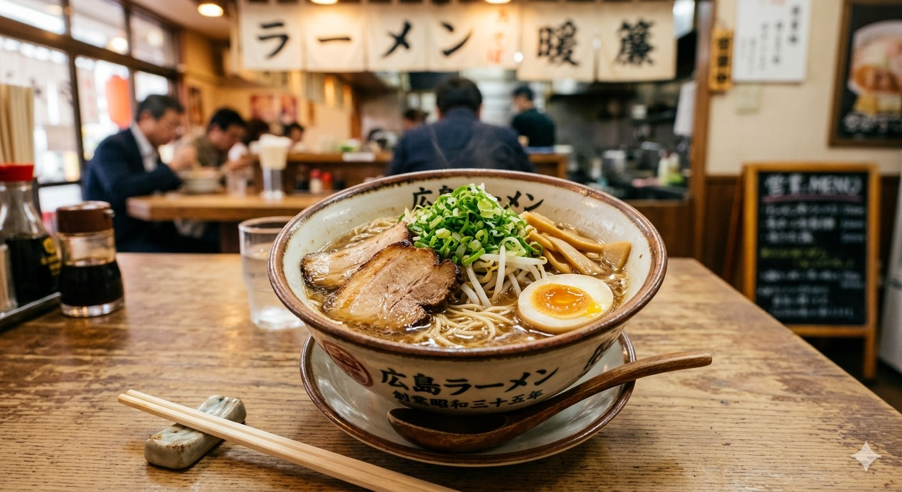
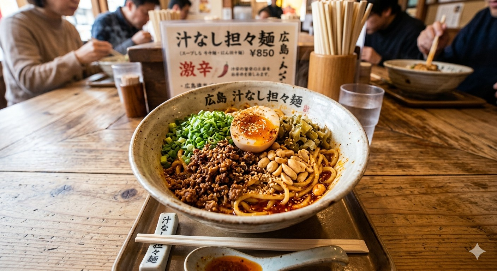
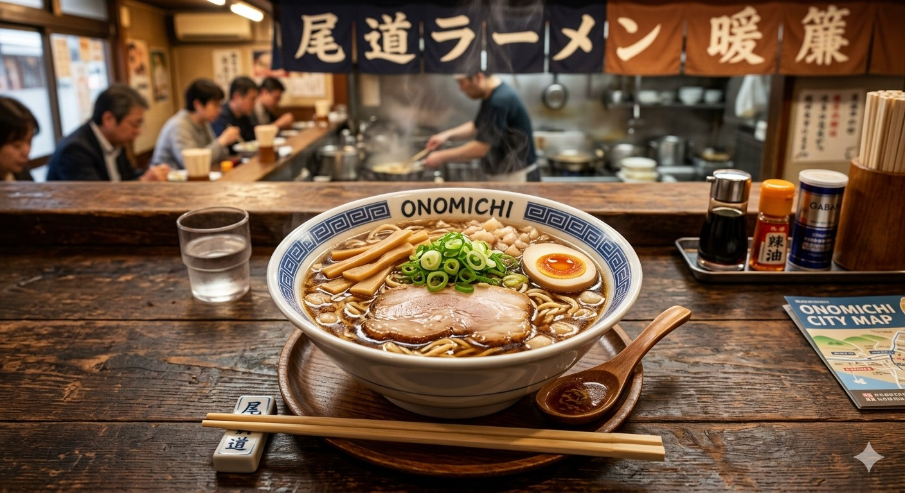

- トップ
- 広島のおすすめラーメン
広島のおすすめラーメン
広島ラーメン

広島を代表するご当地グルメ「広島ラーメン」は、豚骨や鶏ガラをベースに野菜の旨味を加えた、あっさりマイルドな醤油豚骨味が特徴です。
細麺にチャーシュー、ネギ、細もやしがトッピングされるのが王道スタイルで、日常的に愛される親しみやすい味わいです。
汁なし担々麵

広島の「汁なし担々麺」は、本場・中国四川省のスタイルに由来する、
唐辛子の「辣（ラー）」と花椒の「麻（マー）」による強烈な辛みと痺れが特徴です。
タレと麺、具材を丼の底から数十回しっかり混ぜてから食べるのが最大の醍醐味となっています。
尾道ラーメン

尾道ラーメンは、瀬戸内の小魚（いりこ等）と鶏ガラをベースにしたあっさり醤油スープに、豚の背脂のミンチを浮かべたご当地ラーメンです。
魚介の深い旨味とコク、そして背脂の甘みが絶妙に絡み合う、地元で愛され続ける一杯です。